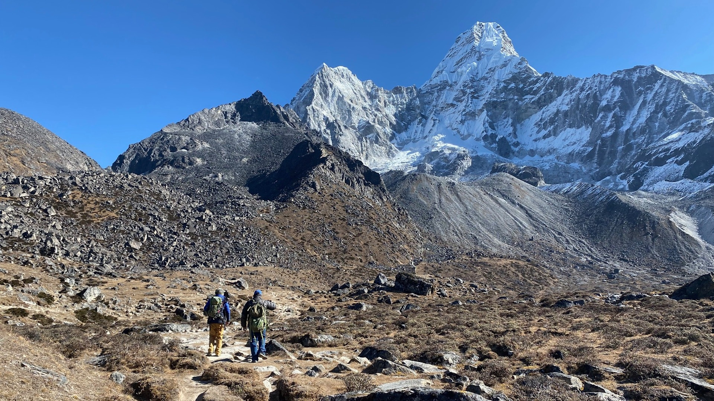
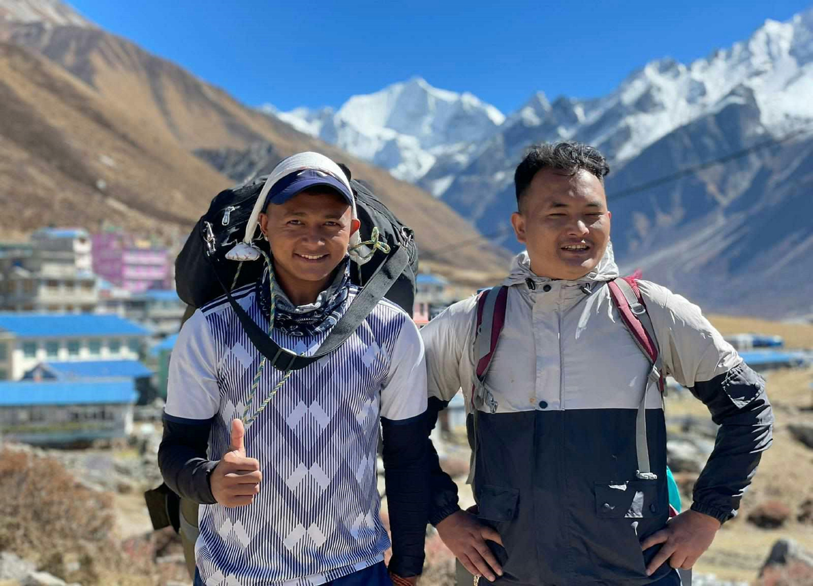
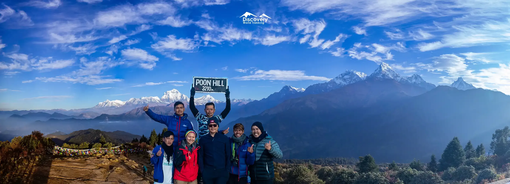

Popular Trekking Routes

Everest Base Camp Trek
Reach the base of the world’s highest peak. Explore Sherpa villages, monasteries, and enjoy stunning Himalayan panoramas.

Annapurna Circuit Trek
Experience diverse landscapes from subtropical forests to alpine peaks. Visit traditional Gurung and Magar villages.

Langtang Valley Trek
A scenic trek through lush forests, past glaciers, and traditional Tamang villages. Known for beautiful valley landscapes.

Manaslu Circuit Trek
Less crowded trail around Mount Manaslu. Offers stunning Himalayan views and traditional village culture.

Upper Mustang Trek
Experience the “Forbidden Kingdom” with ancient Tibetan culture, desert landscapes, and mystical caves.

Ghorepani Poon Hill Trek
Short and popular trek with panoramic sunrise views of Annapurna and Dhaulagiri ranges. Great for beginner trekkers.